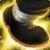

Detox Mouseover
If the target of your mouseover action is a friendly player and they are not already dead, using this macro will cast  Detox on them.
Detox on them.
Copy Macro
If the target of your mouseover action is a friendly player and they are not already dead, using this macro will cast
Detox on them.
Copy Macro
If the target of your mouseover action is a friendly player and they are not already dead, using this macro will cast  Tiger's Lust on them.
Copy Macro
This macro will throw  Bonedust Brew at your cursor's location without having the click on the ground.
Bonedust Brew at your cursor's location without having the click on the ground.
Copy Macro
This macro will cast  Serenity and cast
Rising Sun Kick
at the same time, with just one button press.
Serenity and cast
Rising Sun Kick
at the same time, with just one button press.
Copy Macro